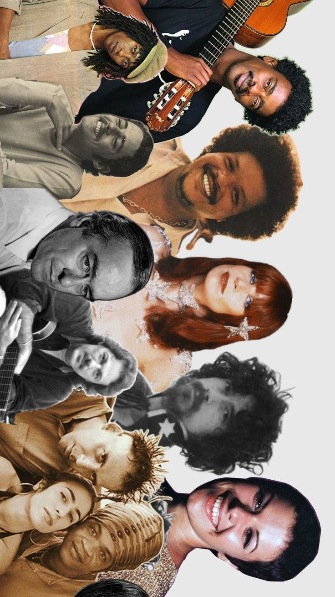
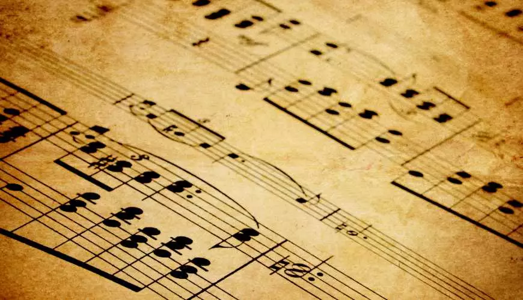
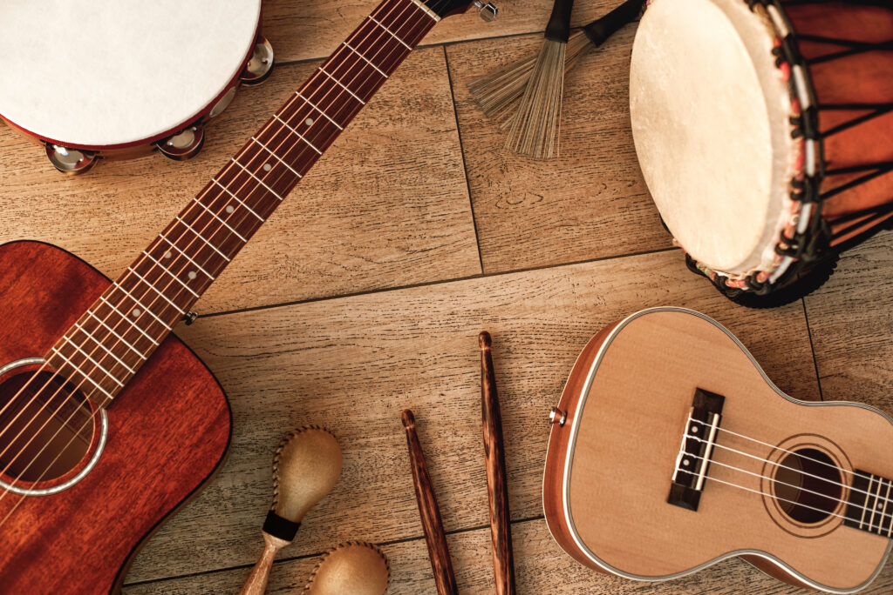

THE BLOG
A música está presente em nossas vidas de diversas formas, despertando emoções, criando memórias e conectando pessoas. Mas você já parou para pensar em como ela surgiu e como evoluiu até os dias de hoje? Nosso objetivo é apresentar o fascinante mundo da música, explorando suas origens, sua história, seus gêneros e sua influência em nossas vidas. Queremos despertar sua curiosidade e mostrar que, por trás de cada ritmo e melodia, existe uma história esperando para ser descoberta. Mais do que ouvir, é preciso compreender. Descubra a história por trás de cada som!

A importância da música na vida das pessoas
Primeiro, devemos educar a alma através da música e, a seguir, o corpo através da ginástica”, disse Platão.
Na música estão contidos três elementos: as palavras, a harmonia e o ritmo. Daí a importância da boa música.
A música penetra diretamente em nossos centros nervosos e coordena mentalmente, de maneira rápida e imediata, a divisão do tempo e do espaço, além de inspirar o gosto pelas virtudes.
LIVROS COM A TEMÁTICA MUSICAL:
- Só por hoje e para sempre
- Pequena viagem pelo mundo da música
- Festas e batuques
- A música do homem
- Todo DJ já sambou
- História social do jazz
- Sambazz
Fonte:www.escolavillare.com.br
Mara de Godoy (Colaboradora da Biblioteca, do CEFSA)
Posts recentes

1 Jan 2026
História da música
Você já parou para pensar em como a música surgiu? Descubra como ela acompanha a humanidade desde os tempos antigos, conheça sua evolução ao longo dos séculos e entenda como os sons se transformaram na diversidade musical que conhecemos hoje.

1 Jan 2026
Gêneros musicais
Explore diferentes gêneros musicais, conheça suas origens e descubra as influências culturais por trás de cada ritmo.